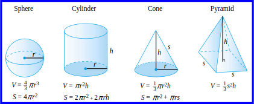
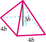
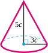
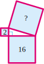

An exponent tells us how many times its base occurs as a factor in an expression.
To indicate that a negative number is raised to a power, we must enclose the negative number in parentheses.
An exponent on a variable indicates repeated multiplication, while a coefficient in front of a variable indicates repeated addition.
An exponent applies only to its base, and not to any other factors in the product. If we want an exponent to apply to more than one factor, we must enclose those factors in parentheses.
Order of Operations.
Perform any operations inside parentheses, or above or below a fraction bar.
Compute all indicated powers.
Perform all multiplications and divisions in the order in which they occur from left to right.
Perform additions and subtractions in order from left to right.
We can add or subtract like powers of the same variable by combining their coefficients; the exponent does not change.
SubsectionLesson 5.2 Square Roots and Cube Roots
Square Root.
The number \(s\) is called a square root of a number \(b\) if \(s^2=b\text{.}\)
Every positive number has two square roots, one positive and one negative. The positive square root of a number is called the principal square root.
We cannot take the square root of a negative number.
Cube Root.
The number \(c\) is called a cube root of a number \(b\) if \(c^3=b\text{.}\)
Every number has exactly one cube root.
A rational number is one that can be expressed as a quotient (or ratio) of two integers, where the denominator is not zero.
Decimal Form of a Rational Number.
The decimal representation of a rational number has one of two forms.
The decimal representation terminates, or ends.
The decimal representation repeats a pattern.
The rational and irrational numbers together make up the real numbers, and the number line is sometimes called the real line.
Order of Operations.
Perform any operations inside parentheses, or above or below a fraction bar.
Compute all indicated powers and roots.
Perform all multiplications and divisions in the order in which they occur from left to right.
Perform additions and subtractions in order from left to right.
SubsectionLesson 5.3 Using Formulas
Volume is the amount of space contained within a three-dimensional object, and is measured in cubic units, such as cubic feet or cubic centimeters. Surface area is the sum of the areas of all the faces or surfaces that contain a solid, and is measured in square units.

Taking a square root is the opposite of squaring a number. We can undo the squaring operation by taking square roots.
Pythagorean Theorem.
If \(c\) stands for the length of the hypotenuse of a right triangle, and the lengths of the two legs are represented by \(a\) and \(b\text{,}\) then
\begin{equation*}
a^2 + b^2 = c^2
\end{equation*}
If we plan to use a formula more than once with different values for the variables, it may be faster in the long run to solve for one of the variables in terms of the others.
SubsectionLesson 5.4 Products of Binomials
When we add like terms, we do not change the variable in the terms; we combine the coefficients. When we multiply expressions, we multiply the coefficients and we multiply the variables.
An algebraic expression with only one term is called a monomial. An expression with two terms is called a binomial, and an expression with three terms is a trinomial. The expression \(ax^2+bx+c\) is thus called a quadratic trinomial.
We use the distributive law to expand the product of two binomials. The letters \(\blert{\text{F, O, I, L}}\) indicate the four steps in computing the product:
\(\blert{\text{F}}\) stands for the product of the \(\blert{\text{First}}\) terms in each binomial.
\(\blert{\text{O}}\) stands for the product of the \(\blert{\text{Outer}}\) terms.
\(\blert{\text{I}}\) stands for the product of the \(\blert{\text{Inner}}\) terms.
\(\blert{\text{L}}\) stands for the product of the \(\blert{\text{Last}}\) terms.
SubsectionReview Questions
Use complete sentences to answer the questions.
Explain the difference between \(-3^2\) and \((-3)^2\text{.}\)
If \(s^2=17\text{,}\) then \(s\) is called a of 17.
If \(s^3=17\text{,}\) then \(s\) is called a of 17.
What is the difference between the square of 4 and the square root of 4?
What is the difference between \(x^2=9\) and \(x=\sqrt{9}\text{?}\)
What is the difference between \(-\sqrt{25}\) and \(\sqrt{-25}\text{?}\)
Explain the difference between a coefficient and an exponent. Use the expressions \(2x^3\) and \(3x^2\) to illustrate your explanation.
Is the statement \(\sqrt{81}=\sqrt{9}=3\) correct? Explain why or why not.
When asked to state the Pythagorean theorem, a classmate says, "\(a^2+b^2=c^2\) when the sides of a triangle are \(a, b,\) and \(c\text{.}\)" Another student claims that the formula does not work for all triangles. Do you agree with either student? What necessary part or parts of the theorem are not mentioned by either of the two classmates?
A classmate says that \(\sqrt[3]{2}\) must be a rational number because it can be written as \(\dfrac{\sqrt[3]{2}}{1}\text{.}\) Do you agree or disagree? Explain.
Give an example of a negative irrational number.
What do you get if you square \(\sqrt[3]{5}\) and then multiply the result by \(\sqrt[3]{5}\text{?}\) Explain how to get the correct answer without using a calculator.
What do volume and surface area measure? What are the units of each?
How can you tell from its decimal form whether a number is rational or irrational?
What are the four terms in the product \((a+b)(c+d)\text{?}\)
For Problems 7–8, identify each number as rational, irrational or undefined.
7.
\(\displaystyle \sqrt[3]{-5}\)
\(\displaystyle \sqrt{-5^2}\)
\(\displaystyle \sqrt{(-5)^2}\)
\(\displaystyle (\sqrt[3]{-5})^2\)
8.
\(\displaystyle -3.1\overline{6}\)
\(\displaystyle -3.16\)
\(\displaystyle -\sqrt{10}\)
\(\displaystyle -\pi\)
Exercise Group.
For Problems 9–10, decide whether each number is rational or irrational. Then find a decimal form for each number. If it is irrational, round to hundredths.
9.
\(\displaystyle \sqrt{300}\)
\(\displaystyle 5+\sqrt[3]{15}\)
10.
\(\displaystyle \sqrt[3]{512}\)
\(\displaystyle \dfrac{7}{\sqrt{81}}\)
Exercise Group.
For Problems 11–14, simplify.
11.
\(4-2 \cdot 3^2\)
12.
\(-2-3(-3)^3-2\)
13.
\(\dfrac{-6-\sqrt{6^2-4(2)(4)}}{2(2)}\)
14.
\(18-2\sqrt[3]{\dfrac{4}{3}(48)}\)
Exercise Group.
For Problems 15–16, give a decimal approximation rounded to thousandths.
15.
\(8-5\sqrt{6}\)
16.
\(\dfrac{3+\sqrt[3]{3}}{3}\)
Exercise Group.
For Problems 17–26, evaluate the expression for the given values of the variables. Round to three decimal places any answers which are irrational numbers.
What is the smallest positive integer (other than 1) that is both a perfect square and a perfect cube?
28.
Find the cube root of \(27^2\) without using a calculator.
Exercise Group.
For Problems 29–32,
Find the unknown side or sides for the right triangle.
Find the perimeter of the triangle.
Find the area of the triangle.
29.
30.
31.
32.
Exercise Group.
For Problems 33–34, find the volume and surface area of the box.
33.
34.
Exercise Group.
For Problems 35–36, write an algebraic expression for the volume of the figure.
35.

36.

Exercise Group.
For Problems 37–38, write expressions for the volume and surface area of the figure.
37.
38.
Exercise Group.
For Problems 39–42, solve the formula for the indicated variable.
39.
\(s=vt+\dfrac{1}{2}at^2~~~~~~\) for \(v\)
40.
\(A=\dfrac{h}{2}(b+c)~~~~~~\) for \(c\)
41.
\(S=\dfrac{n}{2}(a+f)~~~~~~\) for \(a\)
42.
\(s=vt+\dfrac{1}{2}at^2~~~~~~\) for \(a\)
Exercise Group.
For Problems 43–50, draw a sketch, write an equation, and solve. Round your answer to the nearest tenth.
43.
Francine walks along the edge of a rectangular yard from the northwest corner to the southeast corner. Delbert walks diagonally across the same yard. If the yard is 30 yards long and 20 yards wide, how much farther does Francine walk than Delbert?
44.
Rani kayaks due west for 2500 meters, then due south for another 1000 meters. If she now kayaks directly back to her starting point, how long is her total trip?
45.
The volume of a spherical communications satellite is 65.45 cubic feet. What is the radius of the satellite?
What is the surface area of the satellite in part (a)?
46.
Francine’s coffee cup is shaped like a cylinder 10 centimeters tall with a radius of 3.36 centimeters. What is its volume in cubic centimeters?
One fluid ounce is about 29.56 cubic centimeters. Find the volume of Francine’s coffee cup in ounces, rounded to the nearest ounce.
Delbert’s coffee cup is also 10 centimeters tall, but its volume is 24 fluid ounces. What is its radius?
47.
A rectangle is 7 meters wide and 9 meters long. What is the length of its diagonal?
48.
The size of a TV screen is the length of its diagonal. What is the size of a TV whose screen measures 12 inches by 16 inches?
49.
A 26-meter guy wire is attached to a radio antenna for support. One end of the wire is attached to the antenna 24 meters above the ground, and the other is attached to an iron ring in a cement slab on the ground. How far is the ring from the base of the antenna?
50.
Find the height of an equilateral triangle whose sides are each 8 centimeters long.
Exercise Group.
For Problems 51–54, compute the product.
51.
\(-5x(4-3x)\)
52.
\((3xy-4x^2+2)(-2xy)\)
53.
\(3xy(2x-4-y)\)
54.
\(-2a(-a^2-2a+4)\)
Exercise Group.
For Problems 55–56, simplify if possible.
55.
\(\displaystyle 6t^2-8t^2\)
\(\displaystyle 6t-8t^2\)
\(\displaystyle 6t(-8t^2)\)
56.
\(\displaystyle w^2+w^2\)
\(\displaystyle -w-w\)
\(\displaystyle w^2-w\)
Exercise Group.
For Problems 57–60, simplify if possible.
57.
\(6a(2a-1)-(3a^2-3a)\)
58.
\(4b-2(3-b^2)-b(b-3)\)
59.
\(5a(2a-3)-4(3a^2-2)+6a\)
60.
\(2x(x-3y)-3y(x-3y)\)
Exercise Group.
For Problems 61–62, fill in the missing algebraic expressions.
61.
\(-2n(3n+?)=-6n^2-2n\)
62.
\(5b(6+?)=30b-35b^2\)
Exercise Group.
For Problems 63–64, write the area of the rectangle in two different ways:
as the sum of four smaller areas,
as one large rectangle, using the formula Area \(=\) length \(\times\) width.
63.
64.
Exercise Group.
For Problems 65–76, compute the product.
65.
\((x-2)(x+4)\)
66.
\((2y+1)(3y-2)\)
67.
\((5a+1)(5a-1)\)
68.
\((n-7)(n-7)\)
69.
\((2q+5)(2q+5)\)
70.
\((3c-8)(3c+8)\)
71.
\((u-5)(u-2)\)
72.
\((3r+2)(r-4)\)
73.
\((a+6)^2\)
74.
\((6y+5)(6y-5)\)
75.
\((2a-5c)(3a+2c)\)
76.
\(-3(x-4)(2x+5)\)
77.
Use the given areas to find the area of the large square shown below.

78.
Use the given areas to find the area of the large semicircle shown below.